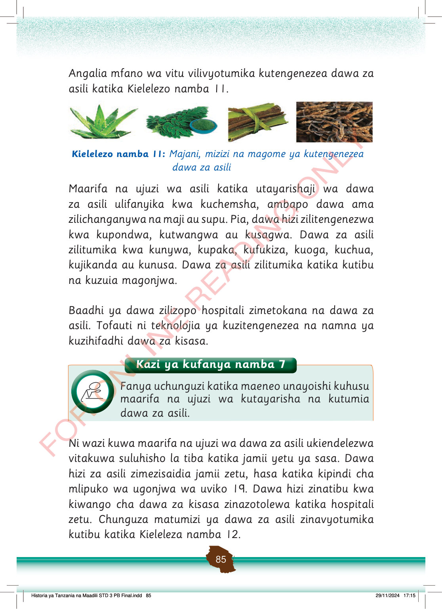

Angalia mfano wa vitu vilivyotumika kutengenezea dawa za asili katika Kielelezo namba 11.
Mshubiri wenye majani ya kijani, hutumiwa kutengeneza dawa za asili.
Majani ya mmea na unga wa kijani unaotokana nayo kwa dawa za asili.
Magome ya mti yaliyokatwa, hutumiwa kutengeneza dawa za asili.
Mizizi iliyokaushwa kwa matumizi ya kutengeneza dawa za asili.
Kielelezo namba 11: Majani, mizizi na magome ya kutengenezea dawa za asili
Maarifa na ujuzi wa asili katika utayarishaji wa dawa za asili ulifanyika kwa kuchemsha, ambapo dawa ama zilichanganywa na maji au supu.
Pia, dawa hizi zilitengenezwa kwa kupondwa, kutwangwa au kusagwa.
Dawa za asili zilitumika kwa kunywa, kupaka, kufukiza, kuoga, kuchua, kujikanda au kunusa.
Dawa za asili zilitumika katika kutibu na kuzuia magonjwa.
Baadhi ya dawa zilizopo hospitali zimetokana na dawa za asili.
Tofauti ni teknolojia ya kuzitengenezea na namna ya kuzihifadhi dawa za kisasa.
Ni wazi kuwa maarifa na ujuzi wa dawa za asili ukiendelezwa vitakuwa suluhisho la tiba katika jamii yetu ya sasa.
Dawa hizi za asili zimezisaidia jamii zetu, hasa katika kipindi cha mlipuko wa ugonjwa wa uviko 19.
Dawa hizi zinatibu kwa kiwango cha dawa za kisasa zinazotolewa katika hospitali zetu.
Chunguza matumizi ya dawa za asili zinavyotumika kutibu katika Kieleleza namba 12.
Kazi ya kufanya namba 7
Fanya uchunguzi katika maeneo unayoishi kuhusu maarifa na ujuzi wa kutayarisha na kutumia dawa za asili.